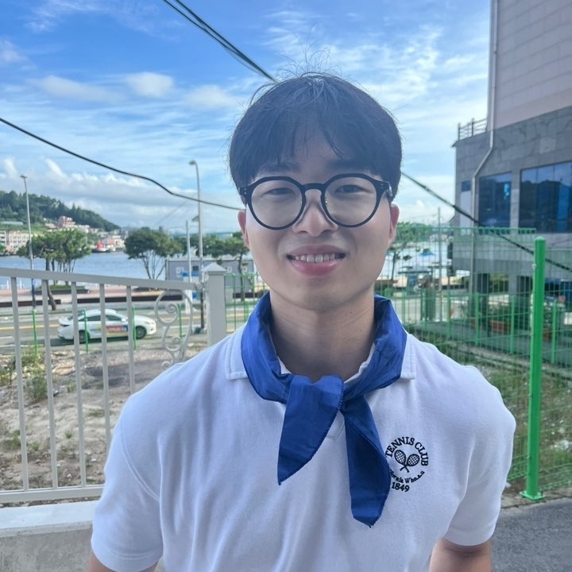

2025 - Present
Jongwon Lim
Ph.D. Student, Graduate School of Data Science, Seoul National University
elijah0430@snu.ac.kr · elijah0430.github.io · Google Scholar · LinkedIn · Lab Page

Research Interests
I am interested in developing methods for understanding the internal mechanisms of language models, and using those insights to improve practical NLP and LLM applications.
Education
2019 - 2025
Seoul National University
B.A. in Linguistics and Data Science for Humanities
Awards
2025.09 - 2026.08
Research Scholarship
National Research Foundation of Korea (NRF)
2024
Outstanding Bachelor's Thesis
Evaluating the Understanding of Blend Morphology in Large Language Models
Publications
NeurIPS 2026
Your Language Model is Its Own Critic: Reinforcement Learning with Value Estimation from Actor's Internal States
Yunho Choi*, Jongwon Lim*, Woojin Ahn, Minjae Oh, Jeonghoon Shim, Yohan Jo
POISE estimates RLVR baselines from the actor's internal hidden states and entropy statistics, reducing rollout overhead while matching DAPO-level performance.
arXiv · PDF · Project page
EMNLP 2026 Main
ArcANE: Do Role-Playing Language Agents Stay in Character at the Right Time?
Woojung Song, Nalim Kim, Sangjun Song, Chaewon Heo, Jongwon Lim, Yohan Jo
ArcANE evaluates whether role-playing language agents adapt a character's behavior to the right point in its narrative arc, rather than repeating a static persona.
Mech Interp Workshop @ ICML 2026
How Language Models Compute Negation: A Mechanistic Study of Factual Negation
Jongwook Yoon, Jongwon Lim, Yohan Jo
Negation is integrated into relation representations and propagated through the factual-recall pathway, where later layers weaken support for the original object.
OpenReview · PDF · Poster
ICML 2026 Regular Paper · Mech Interp Workshop @ NeurIPS 2025
Dual Mechanisms of Value Expression: Intrinsic vs. Prompted Values in Large Language Models
Jongwook Han*, Jongwon Lim*, Injin Kong, Yohan Jo
A mechanistic analysis for understanding how language models internally represent and express values under intrinsic and prompted settings.
arXiv · PDF · Project page · OpenReview
ACL Findings 2026
Learning to Retrieve User History and Generate User Profiles for Personalized Persuasiveness Prediction
Sejun Park, Yoonah Park, Jongwon Lim, Yohan Jo
A context-aware user profiling framework that retrieves persuasion-relevant history and generates user profiles for a practical NLP task: persuasiveness prediction.
FEVER Workshop @ EMNLP 2024
DAHL: Domain-specific Automated Hallucination Evaluation of Long-Form Text through a Benchmark Dataset in Biomedicine
Jean Seo, Jongwon Lim, Dongjun Jang, Hyopil Shin
A biomedical benchmark and automated evaluation pipeline for factuality assessment in long-form LLM outputs.
Preprints
arXiv preprint, 2026
How Do LLMs Change Predictions Under Negation?
Jongwook Yoon*, Jongwon Lim*, Sungjib Lim, Woojin Cho, Yohan Jo
A study of how language models revise factual predictions when statements are negated.
arXiv preprint, 2026
The Low-Rank Structure of VLA Reinforcement Learning
Minjae Oh*, Yoonah Park*, Jongwon Lim*, Yohan Jo
An investigation of the low-rank structure that emerges during reinforcement learning for vision-language-action models.
Teaching
Spring 2026
Teaching Assistant
Seoul National University. Course: Large Language Models and Conversational AI.
Services
2026
Reviewer
- Pluralistic Alignment Workshop @ ICML 2026
- Mechanistic Interpretability Workshop @ ICML 2026 · also emergency reviewer
- 3rd AI for Math Workshop @ ICML 2026
- BlackboxNLP Workshop @ EMNLP 2026
- Interpretability for Discovery Workshop @ NeurIPS 2026 · also emergency reviewer
- Transitioning from Pre-Training to Post-Training Workshop @ NeurIPS 2026
2026
Mentor, 3rd LG AI Youth Camp
Mentored student participants on AI projects and research-oriented problem solving.
Experience
Oct 2023 - Sep 2024
Research Intern, CL_NLP Lab, Seoul National University
Language model training and evaluation, retrieval-augmented generation, experiments, analysis, and academic writing.
May 2024 - Dec 2024
Head Researcher, SNU Faculty of Liberal Education
Benchmark dataset for evaluating morphological capabilities of large language models.
Jan 2024 - Mar 2024
Kaggle Silver Medalist, LLM - Detect AI-generated Text
Built ensemble systems for AI-generated text detection.
Apr 2021 - Sep 2022
Military Service, Republic of Korea Army
Instructor for armored vehicle operation at the Republic of Korea Army Armor School.
Last updated: 2026-10-08